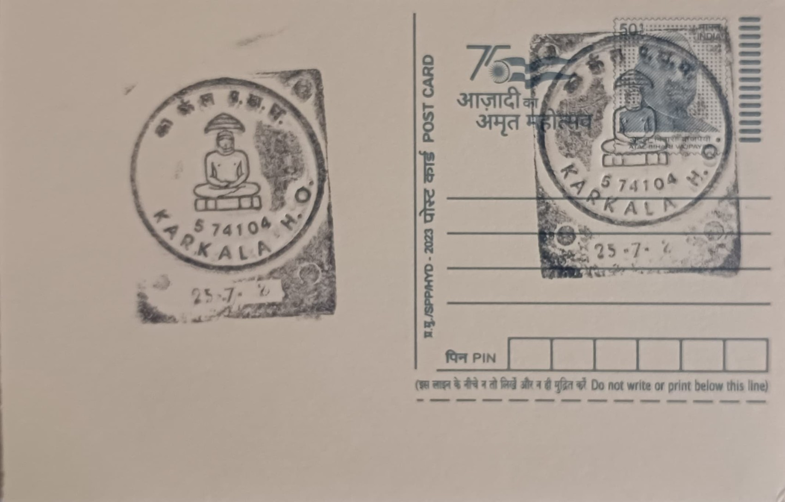

Seated Tirthankara
ಆಸೀನ ತೀರ್ಥಂಕರ


The seated Tirthankara, one of Jainism's recurring iconographic forms, represents one of the twenty-four Jinas (ford-makers) who attained omniscience and liberation through renunciation, shown in Padmasana, the cross-legged meditative lotus posture, as opposed to the standing Kayotsarga form exemplified elsewhere by colossal Bahubali images. In Karkala, such seated figures are preserved in several of the town's eighteen historic basadis, among them the Neminatha Basadi (also called Here Basadi), whose principal sanctum enshrines a roughly five-foot black stone image of Neminatha, the twenty-second Tirthankara, seated on a lotus pedestal known locally as the Kamala Peetha, flanked by subsidiary images of the twenty-four Jinas in standing posture.
Karkala's standing as a seat of Jain devotion rests on patronage by the Alupa kings who governed Tulu Nadu in the early medieval period and, more decisively, by the Bhairarasa Wodeyars of Karkala, a Jain feudatory line owing allegiance to the Vijayanagara empire from the fourteenth century onward. Under this dynasty the town developed into one of coastal Karnataka's principal Digambara Jain centres, comparable in religious importance, if not in scale of fame, to Shravanabelagola, with its basadis functioning as both devotional sites and seats of the Karkala Jaina Matha, whose pontiffs, including the preceptor Lalitakirti, guided major religious commissions in the region.
The Neminatha Basadi's foundation is traditionally dated to the reign of a ruler remembered locally as Veera Pandya or Varanga Raya, with temple tradition placing its origins at roughly twelve centuries ago, predating the Bhairarasa line's later, more extensively documented building activity. That later activity is best recorded in the nearby Chaturmukha Basadi, raised in 1586 CE by Immadi Bhairarasa Wodeyar atop Chikkabetta hill, a four-faced (chaturmukha) shrine with identical entrances on all sides opening onto a single garbhagriha, around which life-size seated and standing Tirthankara images, together with smaller representations of all twenty-four Jinas, are arranged in a plan inscriptions of the period call Tribhuvanatilaka-Jina-Chaityalaya.
A defining stylistic trait linking these seated Tirthankara images across Karkala's basadis is their restrained ornamentation: smooth, unadorned torsos, downcast meditative eyes, and the near-total absence of crowns or jewellery that mark contemporaneous Hindu temple sculpture of the Vijayanagara period, visually encoding the Jain doctrinal stress on detachment from material embellishment. This austerity sits in close physical proximity to the monolithic 1432 CE Gommateshwara statue on Karkala's rocky outcrop, commissioned under Veera Pandya Bhairarasa at Lalitakirti's urging, so that a visitor moving between the hill's standing colossus and the basadis' seated Jinas encounters, within a few hundred metres, the two principal sculptural idioms through which Digambara Jainism represents liberated beings.
Several of these basadis, including the Chaturmukha, Neminatha, Chandranatha and Anantanatha temples, remain functioning places of worship today, maintained by local Jain trusts and the Karkala Jaina Matha and drawing seasonal pilgrim gatherings tied to the Gommateshwara site's own Mahamastakabhisheka-linked festivities, even as scholarly attention to them is generally overshadowed by Shravanabelagola's larger renown. Karkala's cluster of seated and standing Tirthankara imagery, taken together, has become the basis on which heritage surveys and the Archaeological Survey of India's regional listings treat the town as a distinct secondary node of Jain art history on the Karnataka coast, a status the post office's pictorial cancellation marks for a readership well beyond the district itself.
| Date of Introduction | February 5, 1991 |
|---|---|
| Address | Senior Postmaster, |
| Karkala HO, | |
| Udupi (dt.), Karnataka - 574104. |